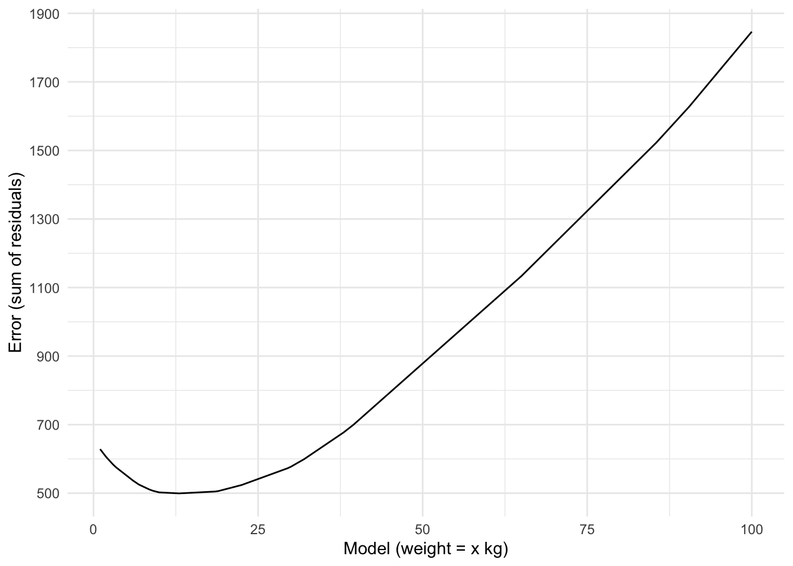
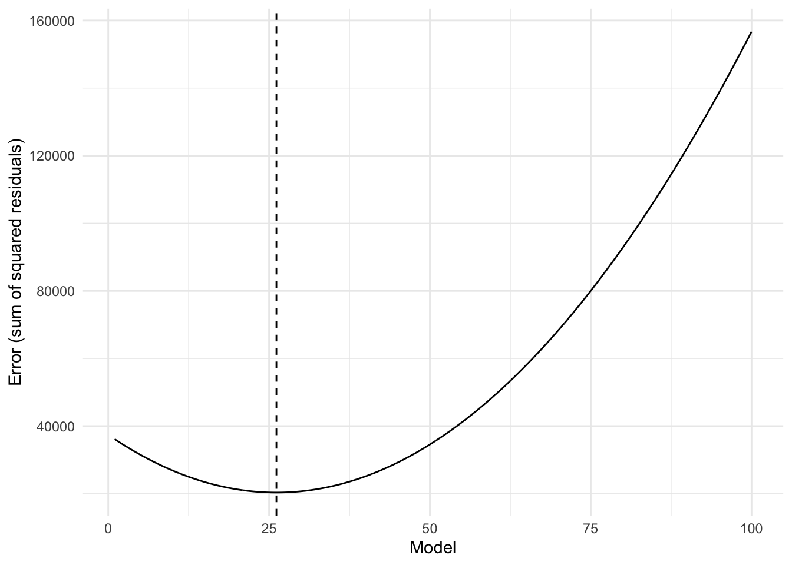

This is Part 1 of a series of blog posts on how to understand regression. The goal is to develop an intuitive understanding of the different components of regression. In this first post, we figure out where the estimate of an intercept-only regression model comes from.
statistics
tutorial
regression
Published
August 1, 2020
The Black Box of Regression
Statistical regression techniques are an important concept in data analysis. As a social scientist, I use it to test hypotheses by comparing differences between groups or testing relationships between variables. While it is easy to run regression analyses in a variety of software packages, like SPSS or R, it often remains a black box that is not well understood. I, in fact, do not believe I actually understand regression. Not fully understanding the mechanics of regression could be okay, though. After all, you also don’t need to know exactly how car engines work in order to drive a car. However, I think many users of regression have isolated themselves too much from the mechanics of regression. This may be the source of some errors, such as applying regression to data that is not suitable for the regression method. If you’re using regression to try and make inferences about the world, it’s probably also a good idea to feel like you know what you’re doing.
So, there are some reasons to figure out regression. This post is Part 1 of a series of blog posts called ‘Understanding Regression’ in which I try to figure it out.
Feel free to follow me along by copy-pasting the code from each step. I’ll add a note in case you need to slightly adjust the code for it to work on your computer.
Setup
To figure out regression, we need data. We could make up some data on the spot, but I’d rather use data that is a bit more meaningful (to me, anyway). Since I’m a big Pokémon fan, I’ll use a data set containing Pokémon statistics.
In case you’re following along, start by loading some packages and reading in the data. In the code section below I use the here package to read in the data, but I recommend that you simply specify the path to the file. After that, I subset the data to make the data a bit more manageable and define a custom mode function because R does not have one (and I need it later).
Code
# Load packageslibrary(tidyverse)library(here)library(knitr)# Read in Pokémon datapokemon <-read_csv(here("data", "pokemon.csv"))# Create a subset with only the first 25 Pokémonpokemon25 <-filter(pokemon, pokedex <=25)# Load a custom function to calculate the modemode <-function(x) { ux <-unique(x) ux[which.max(tabulate(match(x, ux)))]}# Set the default ggplot themetheme_set(theme_minimal())
Let’s take a look at several attributes of some Pokémon to see what they’re about:
Pokémon have different types (e.g., grass, fire, water), a height, some weight, and they are of a particular evolutionary stage (0, 1, or 2). This last variable refers to a Pokémon’s ability to evolve and when they do, they tend to become bigger and more powerful.
Let’s say that we are interested in understanding the weight of different Pokémon. Below I have plotted the weight of the first 25 Pokémon, from Bulbasaur to Pikachu.
We see that the lightest Pokémon is Pidgey, with a weight of 1.8 kg. The heaviest Pokémon is Venusaur, with a weight of 100 kg. The average weight is 26.144 kg.
The simplest model
In order to understand the weights of different Pokémon, we need to come up with a statistical model. In a way, this can be considered a description problem. How can we best describe the different weights that we have observed? The simplest description is a single number. We can say that all Pokémon have a weight of say… 6 kg. In other words:
weight = 6 kg
Of course, this is just one among many possible models. Below I plot three different models, including our weight = 6 kg model.
While a model like weight = 6 kg is a valid model, it is not a very good model. In fact, it only perfectly describes Pikachu’s weight and inaccurately describes the weight of the remaining 24 Pokémon. The other models, such as weight = 40 kg might be even worse; they do not even describe a single Pokémon’s weight correctly, although they do get closer to some of the heavier Pokémon. How do we decide which model is the better model? In order to answer that question, we need to consider the model’s error.
Error
The error of a model is the degree to which the model inaccurately describes the data. There are several ways to calculate that error and we will cover three different definitions.
The first definition of error is simply the sum of times that the model inaccurately describes the data. For each observation we check whether the model correctly describes it or not. We then sum the number of misses and consider that the amount of error for that model. With our weight = 6 kg the answer is 24; out of the 25 Pokémon only Pikachu has a weight of 6, which means the model is correct once and wrong 24 times.
We can now compare different models to one another by calculating the error for a range of models. Below I plot the number of errors for 100 different models, starting with the model weight = 1 kg, up to weight = 10 kg, in steps of 0.1. Ideally we would test more models (up to the heaviest Pokémon we know of), but for the sake of visualizing the result, I decided to only plot a small subset of models.
Code
expand_grid(model =seq(from =1, to =10, by =0.1),weight =pull(pokemon25, weight) ) %>%mutate(error =if_else(abs(weight - model) ==0, 0, 1)) %>%group_by(model) %>%summarize(error_sum =sum(error)) %>%ggplot(aes(x = model, y = error_sum)) +geom_line() +coord_cartesian(ylim =c(0, 25)) +scale_x_continuous(breaks =1:10) +labs(x ="Model (weight = x kg)", y ="Error (sum of errors)")
We see that almost all models perform poorly. The errors range from 23 to 25. Most models seem to have an error of 25, which means they do not accurately describe any of the 25 Pokémon. Some have an error of 24, meaning they describe the weight of 1 Pokémon correctly. There is 1 model with an error of 23: weight = 6.9 kg. Apparently there are 2 Pokémon with a weight of 6.9, which means that this model outperforms the others.
Despite there being a single model that outperforms the others in this set of models, it’s still a pretty poor model. After all, it is wrong 23 out of 25 times. Perhaps there are some models that outperform this model, but it’s unlikely. That’s because we’re defining error here in a very crude way. The model needs to exactly match the weight of the Pokémon, or else it counts as an error. Saying a weight is 6 kg, while it is in fact 10 kg, is as wrong as saying the weight is 60 kg.
Instead of defining error in this way, we can redefine it in a way that takes into account the degree of error. We can define error as the difference between the actual data point and the model’s value. So, in the case of our weight = 6 kg model, an actual weight of 10 kg would have an error of 10 - 6 = 4. This definition of error is often referred to as the residual.
Below I plot the residuals of the first 25 Pokémon for our weight = 6 kg model.
We can add up all of the (absolute) residuals to determine the model’s error. Just like with the binary definition of error, we can then compare multiple models. This is what you see in the graph below. For each model, this time ranging from weight = 1 kg to weight = 100 kg, the absolute residuals were calculated and added together.
Code
expand_grid(model =seq(from =1, to =100, by =0.1),weight =pull(pokemon25, weight) ) %>%mutate(error =abs(weight - model)) %>%group_by(model) %>%summarize(error_sum =sum(error)) %>%ggplot(aes(x = model, y = error_sum)) +geom_line() +scale_y_continuous(breaks =seq(from =500, to =1900, by =200)) +labs(x ="Model (weight = x kg)", y ="Error (sum of residuals)")

This graph looks very different compared to the graph where we calculated the error defined as the sum of misses. Now we see that some kind of minimum appears. Unlike the binary definition of error, it now looks like there are fewer best models. More importantly, though, we have defined error in a less crude manner, meaning that the better models indeed capture the data much better than before.
But we might still not be entirely happy with this new definition of error either. Calculating the sum of absolute residuals for each model comes with another conceptual problem.
When you sum the number of absolute errors, four errors of 1 are equal to a single error of 4. In other words, you could have a model that is slightly off multiple times or one that might make fewer, but larger, errors. Both would be counted as equally wrong. What do we think of that? Conceptually speaking, we might find it more problematic when a model is very wrong than when the model is slightly off multiple times. If we think that, we need another definition of error.
To address this issue, we can square the residuals before adding them together. That way, larger errors become relatively larger compared to smaller errors. Using our previous example, summing four residuals of 1 remains 4, but a single residual of 4 becomes 4 * 4 = 16. The model now gets punished more severely for making large mistakes.
Using this new definition of error, we again plot the error for each model, from 1 to 100.
Code
expand_grid(model =seq(from =1, to =100, by =0.1),weight =pull(pokemon25, weight) ) %>%mutate(error =abs(weight - model)^2) %>%group_by(model) %>%summarize(error_sum =sum(error)) %>%ggplot(aes(x = model, y = error_sum)) +geom_line() +geom_vline(xintercept =mean(pull(pokemon25, weight)), linetype =2) +labs(x ="Model", y ="Error (sum of squared residuals)")

We see a smooth curve, with a clear minimum indicated by the vertical dashed line. This vertical line indicates the model that best describes the data. What is the value of the best model exactly? In this case, the answer is 26.144. And it turns out, there is an easy way to determine this value.
Estimating the model from the data
Rather than setting a specific value and seeing how it fits the data, we can also use the data to determine the value that best fits the data. In the previous graph we saw that the best fitting model is one where the weight is equal to 26.144. This value turns out to be the mean of the different weights we have observed in our sample. Had we defined error as simply the sum of absolute residuals, this would be a different value. In fact, the best fitting value would then be equal to 13, or the median. And had we used the binary definition of error, the best fitting value would be the mode, which in our case is: 6.9. The table below shows an overview of which technique can be used to find the best fitting value, depending on the error definition.
Code
tibble(error_definition =c("sum of errors", "sum of absolute residuals", "sum of squared residuals"),estimation_technique =c("mode", "median", "mean")) %>%kable(col.names =c("Error definition", "Estimation technique"), digits =2)
Error definition
Estimation technique
sum of errors
mode
sum of absolute residuals
median
sum of squared residuals
mean
We can now update our model to refer to the estimation technique, rather than a fixed value. Given that the third definition of error seems to be most suitable, both pragmatically and conceptually, we’ll use the mean:
weight = mean(weight)
This is also the value you get when you perform a regression analysis in R. Using R’s lm function, we can run our model with the following code:
By regressing weight onto 1 we are telling R to run an intercept-only model. This means that R will estimate which line will best fit all the values in the outcome variable, just like we have done ourselves earlier by testing different models such as weight = 6 kg.
The result is an intercept value of 26.144, which matches the mean of the weights.
So, we now know where the intercept comes from when we run an intercept-only model. It is the mean of the data we are trying to model. Note that it is only the mean because we defined the error as the sum of squared residuals. Had we defined the error differently, such as the sum of absolute residuals or the sum of errors, the intercept would be the median or mode of the data instead. Why did we use the sum of squared residuals? We had a conceptual reason of wanting to punish larger residuals relatively more than several smaller errors. It turns out there is another reason to favor squared residuals, which has to do with a nice property of the mean vs. the median. This will be covered in Part 2 of ‘Understanding Regression’.